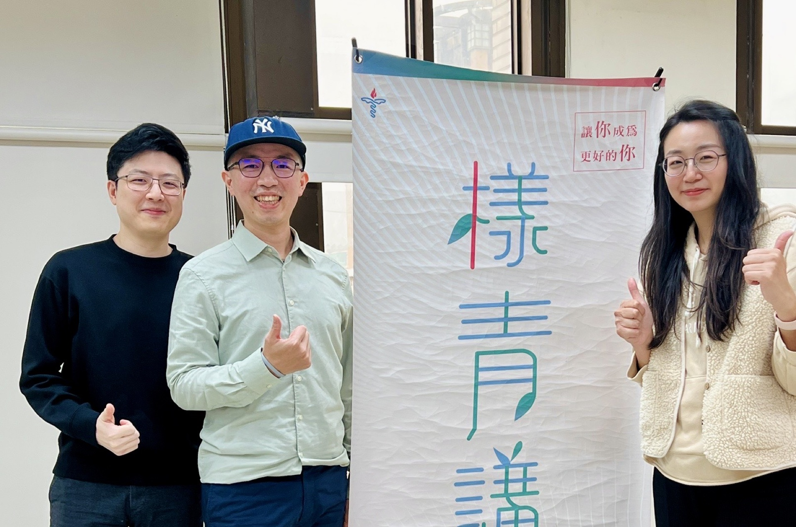

Maybe it's not that you lack effort — you just haven't heard how others made it through.
On the road of growing up and working, we often navigate alone, figuring things out by trial and error. We assume we're the only ones facing these problems, and quietly carry our confusion and anxiety inside.
But in reality, every seemingly stuck moment has been walked through by someone who went before you.
This is a place where you can genuinely share your career journey and life story. We invite workers and entrepreneurs from different fields to talk about their choices, struggles, falls, and turning points — along with the lessons they've carried forward and the practical wisdom you can take with you.
Maybe you're in a season of confusion, of making difficult choices. Here, you don't just hear other people's stories — you'll gradually discover that those seemingly ordinary experiences hold value that can be understood and resonated with, and hidden within them is God's intention for your life.
Youth Ministry — where stories don't just get told, but become a starting point for connection and growth.